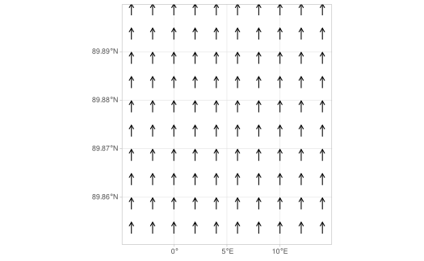
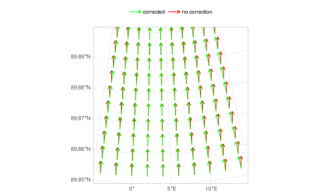
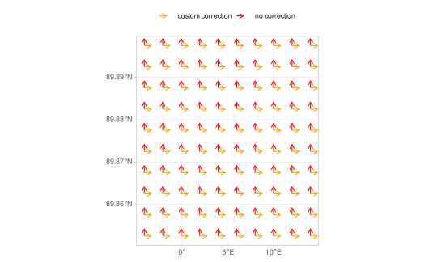

A matter of perspective
When you have a data set in which vector angles are specified, it is important to realise that that angle should have some frame of reference. For instance if you specify an angle in an xy-plane (e.g. 30 degrees from North) and then plot it in a plane with an aspect ratio of 1:2 (i.e., values on the y-axis are twice as tall as those on the x-axis), the angle changes. In the plot the original angle of 30 degrees North would appear as 15 degrees due to the aspect ratio.
The same is true is you specify geographical directions in spherical coordinates, angles will change if you plot it in a different projection where the spherical coordinates are squashed to the flat surface of a plot.
This can be illustrated by setting up a spatial grid with vectors that all point Northwards:
north_arrows <-
expand.grid(
x = seq(-5, 15, length.out = 10),
y = seq(89.85, 89.9, length.out = 10)
) |>
sf::st_as_sf(coords = c("x", "y"), crs = 4326) |>
sf::st_make_grid() |>
stars::st_as_stars(nx = 10, ny = 10) |>
dplyr::mutate(angle = 0*(2*pi/360))Note that if we plot this in WGS84 lon lat projection (i.e., spherical coordinates), all arrows point upwards:
library(ggfields)
library(ggplot2)
theme_set(theme_light())
ggplot() +
geom_fields(data = north_arrows, aes(angle = angle), radius = 1)
Now if we plot the same data in UTM (zone 31 N in meters, EPSG code 32631), and do so without correction (red) and with correction (green), you will see what happens:
no_correction <-
geom_fields(data = north_arrows, aes(angle = angle, col = "no correction"), radius = 1,
.angle_correction = NULL,
max_radius = ggplot2::unit(0.7, "cm"))
p <-
ggplot() +
theme(legend.position = "top") +
labs(colour = NULL)
p +
no_correction +
geom_fields(data = north_arrows, aes(angle = angle, col = "corrected"), radius = 1,
max_radius = ggplot2::unit(0.7, "cm")) +
scale_colour_manual(values = c(`no correction` = "red", corrected = "green")) +
coord_sf(crs = 32631)
Remember that in reality (and in this plot) the parallels of latitude converge at the North Pole. If we don’t correct the angles of zero degrees (red), they will still point upwards, but in the projection of the plot that doesn’t make sense (they don’t point towards the North Pole). You can see that after correction, the arrows do point to the North Pole and follow the curved parallels of latitude.
Correction mechanism of ggfield
Default correction
ggfield uses the angle_correction()
function to correct angles. If your data has a coordinate reference
system (see sf::st_crs()) specified, it will be assumed
that angles are specified in relation to the Earth’s spherical lon-lat
coordinates. In other cases, it is assumed that the angle is specified
in the xy-plane given by the coordinates specified with
ggplot2::aes(). In the latter case, angles are only
corrected for the aspect ratio of the plot.
The angle_correction() function is passed to the
.angle_correction argument of the
geom_fields() function. This correction function is called
when the plot is rendered. When this argument is set to
NULL no correction is applied (see red arrows in plot
above).
Custom correction
It is also possible to provide a custom correction function. You just
need to define a function that accepts the arguments data,
panel_params, and coord. The function should
return a modified version of the data.frame
data that contains a column named
angle_correction. angle_correction should
contain numeric radials that should be added to the
original angle. Let’s say we want a custom correction
function that rotates all angles by 90 degrees (pi/2 in radials), it
would look like this:
custom_correct <- function(data, panel_params, coord) {
data |> dplyr::mutate(angle_correction = pi/2)
}
no_correction[[1]]$geom_params$max_radius <-
ggplot2::unit(0.3, "cm")
p +
no_correction +
geom_fields(data = north_arrows, aes(angle = angle, col = "custom correction"),
radius = 1, .angle_correction = custom_correct,
max_radius = ggplot2::unit(0.3, "cm")) +
scale_colour_manual(values = c(`no correction` = "red",
`custom correction` = "orange"))
Conclusion
The take home message is that angles in your data have been defined
from a certain perspective, about which ggfield knows
nothing. Although the default angle_correction() function
does its best to correct angles in your plot, it is up to you to make
sure that these corrections actually make sense.